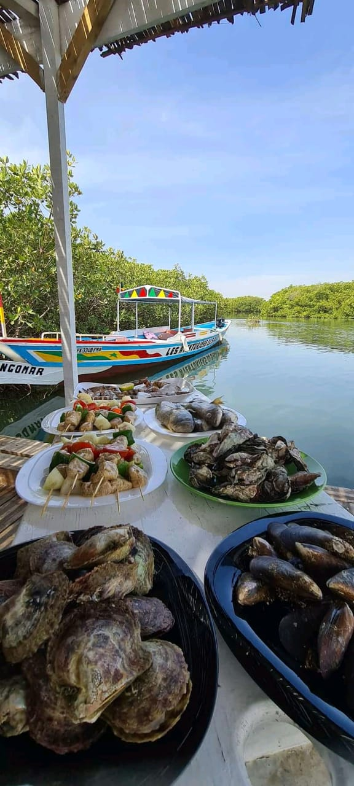
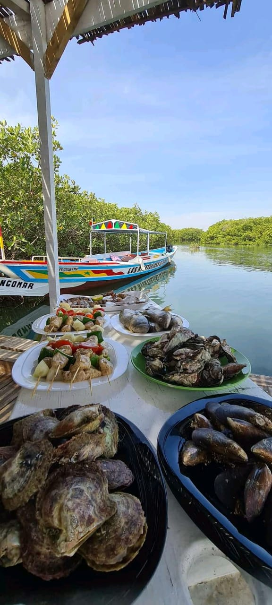
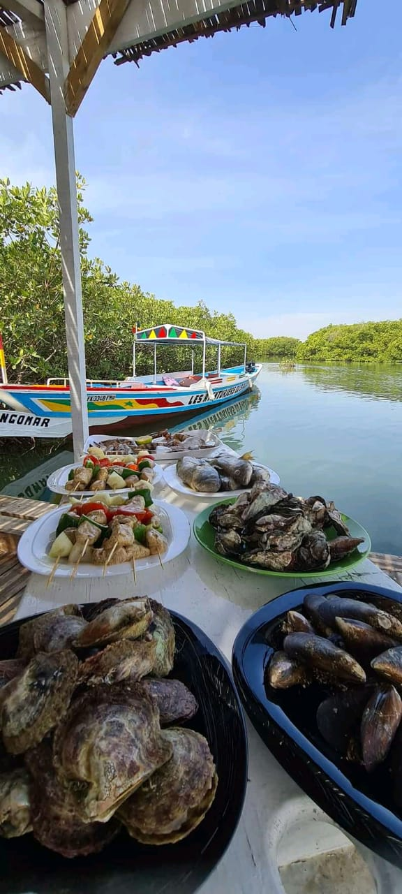

Mar Lodj (parfois Mar Lothie, plus rarement Mar Lyotch, Mar Loytch, Mar Lotche) est un village, de l'île de Mar, située dans le Sine-Saloum au Sénégal à proximité de Ndangane où se trouve l'embarcadère et à une quarantaine de kilomètres de Joal-Fadiouth. L'ile de Mar qui est composé de 3 villes, Mar lothie, Mar Fafaco et Mar Soulou. Située dans le delta du Saloum, site inscrit dans la liste du patrimoine mondial de l’Unesco depuis le 24 juin 2011, l’île de Mar Lodj ou Mar Lothie est exceptionnelle aussi bien sur le plan humain que naturel. On parle ailleurs de dialogue islamo-chrétien. À Mar Lodj, île perdue au cœur du Sine Saloum, cette question est réglée depuis longtemps par les populations locales. Mieux, on y vit un dialogue « islamo-christiano-animiste », au milieu d’un voisinage naturel entre savane et mangrove.

À Mar Lodj, trois arbres différents se détachent de l’ordinaire. Un imposant fromager, un rônier et un caïlcedrat entremêlent leur tronc depuis un passé lointain. Ce phénomène aux apparences naturelles trouve une explication bien enracinée dans la tradition et les croyances des Sérères habitants de cette cité. Il symbolise l’entente entre les trois religions pratiquées sur l’île : l’islam, le christianisme et l’animisme. À l’ombre de ces arbres, des sacrifices sont régulièrement pratiqués mais des personnes viennent aussi y solliciter des bienfaits en y déposant un billet ou une pièce de monnaie dans une calebasse. Mar Lodj, l'île de la tolérance entre religions C'est dans ce décor naturel somptueux que vit une population sérère. La majorité est catholique, contrairement au reste du Sénégal où l'islam domine. Il n'est pas rare de trouver des membres des deux religions dans une même famille. Certains disent avec humour qu'ils se convertissent le temps d'une journée à l'occasion d'une fête de "l'autre" religion ! Les croyances animistes sont partagées par tous et se superposent à l'islam et au catholicisme. Des offrandes sont faites au bois sacré qui trône au milieu du village. Il s'agit d'un étrange entrelacement naturel de trois arbres (rônier, fromager et caïcedrat), qui symbolise la cohésion entre catholiques, musulmans et animistes.
Cette île magnifique présente un écosystème très riche. Entre ses bolongs, ses dunes de sables, et sa proximité avec d’autres localités aussi bénies qu’elle par l’environnement, l’activité touristique y épouse bien les contours de dame nature. Entre autres loisirs, des promenades en pirogue et des excursions de pêche jusqu’à Toubacouta, le village des pêcheurs, des balades en calèche à travers les dunes de sable et des escapades vers les îles aux coquillages au milieu des baobabs millénaires, où l’on observera une multitude d’oiseaux.